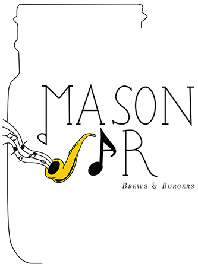
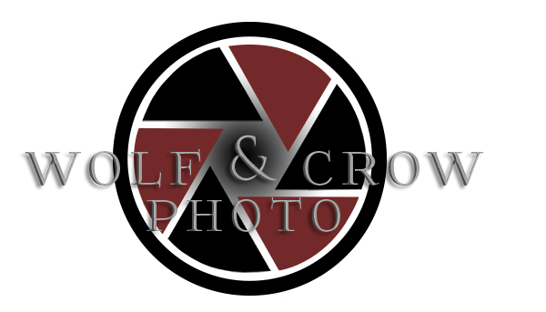
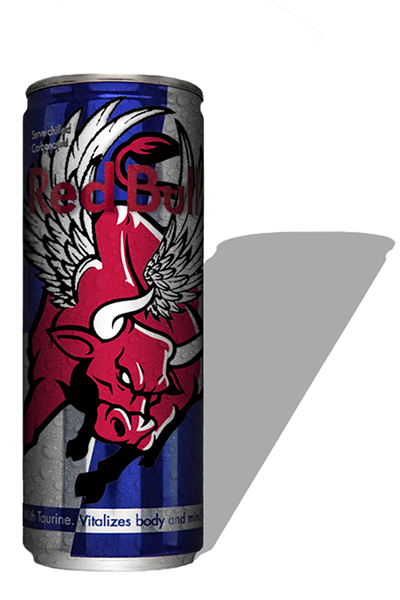
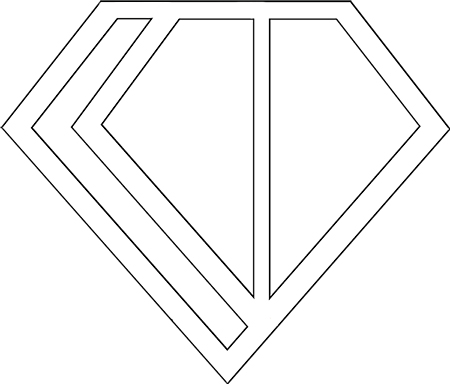
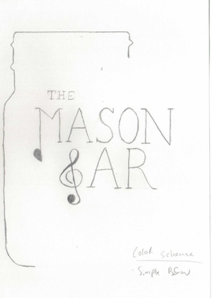

Work
Branding Identity
Mason Jar Restaurant

One of my favorite designs! Click to read about it!
Wolf & Crow Photo

Read about how these were printed!
Band logo
Check out their music here!
Self Started Projects

Curious why I chose to start these? Click here to find out!
My Creative Process
Don't forget to look at the steps I take, or read how I like to approach each opportunity!


To see my whole process, click here!